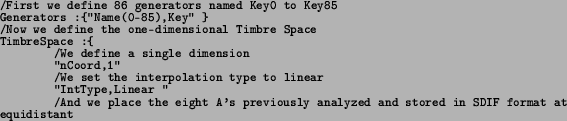
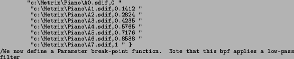
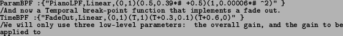
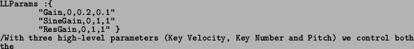
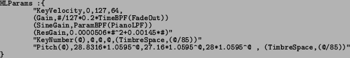

Next: MSDL: The MetriX Score Up: MIDL: The MetriX Instrument Previous: Parameters
In the following example, a simple SMS based piano synthesizer is implemented. Only one dimension of the timbre space is used and the number of control parameters used have been reduced to the minimum to keep the example simple.
Note: The reserved characters '#' and '@' mean the value of the parameter and the number of the Generator involved respectively; a line starting with '/' is a comment that will therefore not be interpreted; ``T'' refers to the default duration of an existing sample.

points

/depending on the value of a given parameter.

/the sinusoidal or residual components

/low-level parameters and the timbre space location

/Note that KeyNumber and Pitch
are alternative ways of controlling the same feature